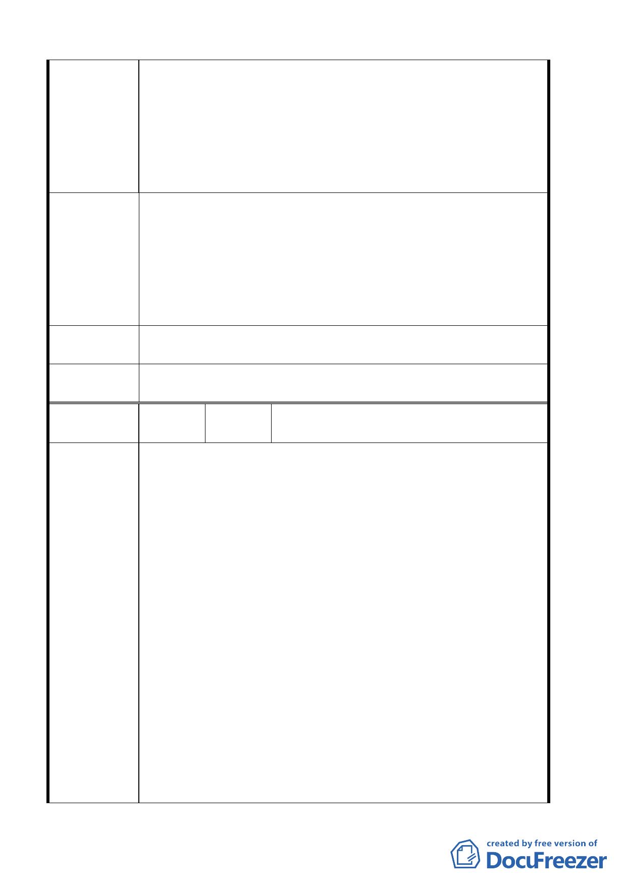

制，需以整各街廓開發單元，由於東半街廓土地為非屬同
一產權，且現況已開發完成，未來與其共同開發將遭困
難，整合不易。
三、本次通盤檢討將「住二山限區」界線調整，本地區山限區
土地得以加速開發，而本街廓山坡地界線調整之情形，對
加速陳情土地開發並無助益， 陳請重新考量調整本街廓
山坡地界現貨放寬全街廓開發限制。
一、建議依陳情土地開發土地需求，將山坡地界線依細部計劃
公展說明書地 4-12 頁（五）3 以完整街廓調整原則，放寬
至街廓北側道路境界線。
建 議 辦 法 二、如建議（一）無法修正時，為配合實際現況使用陳情基地
能單獨開發，建議本案上開土地申請開發時不需受﹁臺北
市山坡地開發建築要點﹂第三條條文規定排除該條文限
制得單獨開發。
專 案 小 組 94.3.3 專案小組第十一次審查會議：同意發展局依等高線、駁
結 論 坎等人工設施，並配合坡度計算，調整山限區範圍。
委員會議
決議
同意依專案小組審查結論辦理。
編 號 ９ 陳情人 關渡麗景管理委員會
建議位置：學園路至光武技術學院間道路
建議理由：
一、有關學園路後段現為六米計畫道路，由無『行人步道』之
路面設計，迫使人車共用路面，行成人車毫無安全保障之
環境，令人望之心生恐懼與不安。
二、本路段每日之用路人有鄰近週邊社區居民上萬人的流量出
入，光武師生（含日夜間）約有一萬六千餘人，及休閒遊
客等進出該路段通行。尖峰時刻有早上、晚上及夜間之下
班者、日、夜間部學生上下學等三個時段，車輛有機車、
陳情理由
中小型汽車、大型公車（光武日間專車上午二十班次、傍
晚十二班次）、計程車等車潮湧現，及地形地勢之故，駕
駛人常越線逆向或急速衝路上下坡之情形，令用路人為之
觸目驚心。至肉身於危境！而駕駛人卻無視於行人的使用
道路權（肇因無人行步道設施），又夜晚（或雨天）視線
更加不良，更增強潛在之車禍傷害發生。
三、因此，特陳請 貴局會所有等單位，本諸願景、建設發展
地方，保障人民身家安全為重，及為民謀福為先，積極檢
討『北投區都市計畫或細部計劃』變更學園路後段光武路
間為 12 米計畫道路，增闢該路段兩旁『人行步道』，建設
第 25 頁，共 49 頁